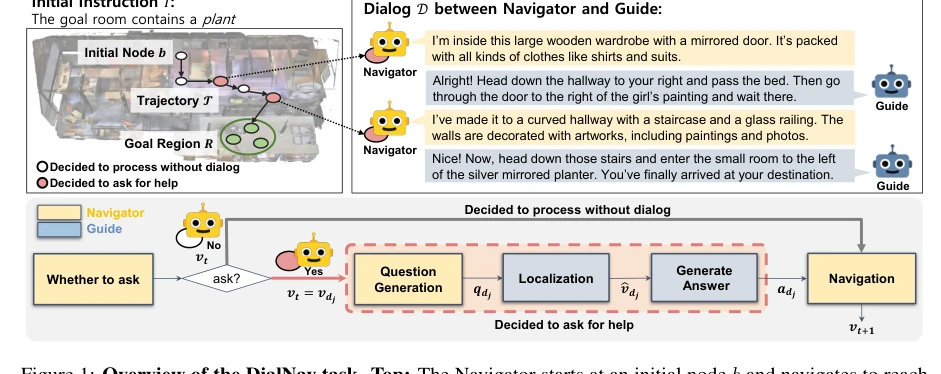
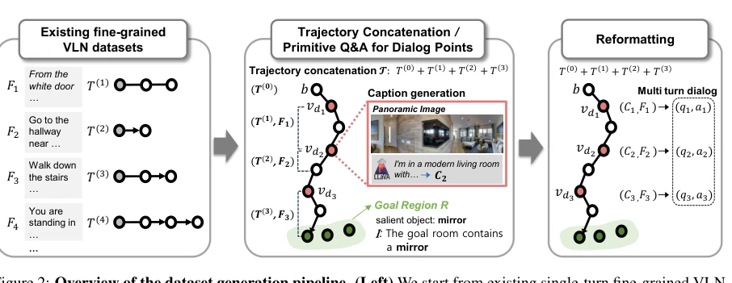
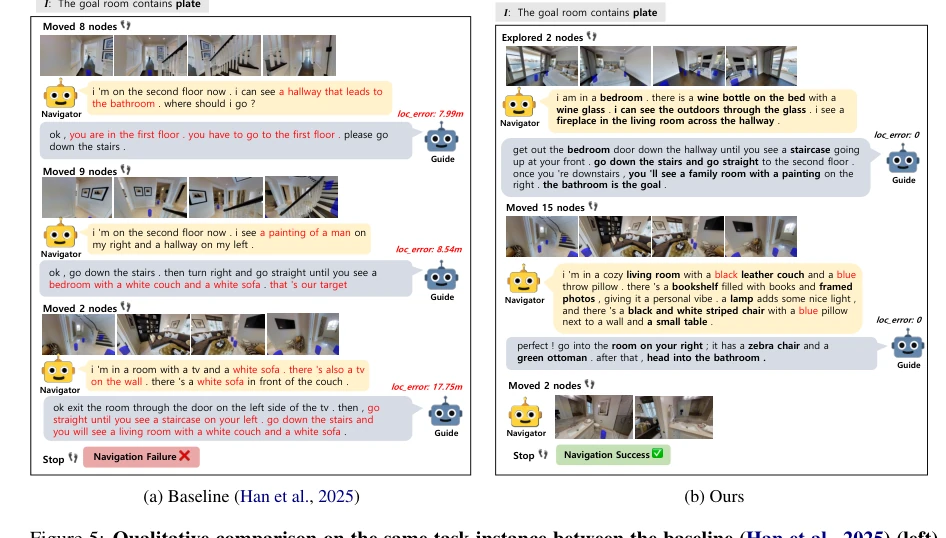
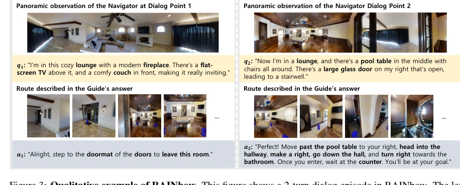
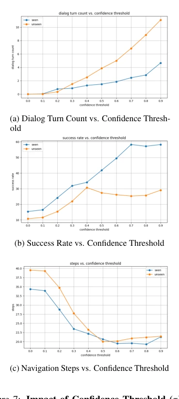
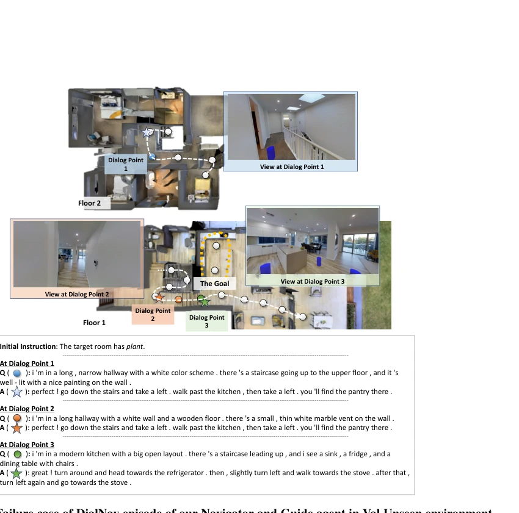

Advancing DialNav through Automatic Embodied Dialog Augmentation
Leekyeung Han, Sangwon Jung, Hyunji Min, Jinseong Jeong, Minyoung Kim, Paul Hongsuck Seo abspdf
论文点评Review
这篇论文给 DialNav 这个娇贵的任务喂了顿大补汤。之前 Han et al. (2025) 搞的 DialNav 虽然概念好，但 2K 数据量简直是在玩泥巴，模型根本学不会复杂的对话导航。作者直接搞了个 RAINbow 数据集，238K 条，靠拼接 VLN 路径和 LLM 重写对话，硬是把数据量拉了两个数量级。虽然合成数据难免有人工味，但配合 Dual-Strategy Training 和定位模型，成功把成功率翻倍了。不过，这种暴力堆料能不能真正解决具身智能的泛化难题，还得看后续在真实世界的表现。毕竟，让机器人听懂人话比让它走对路更难，这篇算是给具身对话导航开了个好头，但离真正的智能还有距离。
This paper provides a substantial boost to the delicate task of DialNav. Although the DialNav proposed by Han et al. (2025) had good conceptual foundations, the 2K data volume was essentially playing with mud, and the model could not learn complex dialogue navigation at all. The authors directly constructed the RAINbow dataset, comprising 238K entries, by splicing VLN paths and rewriting dialogues via LLMs, thereby increasing the data volume by two orders of magnitude. Although synthetic data inevitably carries an artificial flavor, combined with Dual-Strategy Training and localization models, it successfully doubled the success rate. However, whether this aggressive data accumulation can truly solve the generalization challenges of embodied intelligence depends on subsequent performance in the real world. After all, making robots understand human speech is harder than making them walk the right path. This work counts as a good start for embodied dialogue navigation, but there is still a distance from true intelligence.
研究动机Motivation
具身智能体需要对话能力来确保安全和有效性，但 DialNav 任务（Han et al., 2025）面临严重的训练数据稀缺问题。原始 RAIN 数据集仅包含 2K 个 episode，收集成本极高（约 7,500 USD），且现有 VLN 数据增强技术（Fried et al., 2018; Wang et al., 2025b）多局限于单轮指令，无法直接应用于多轮对话导航。此外，原有训练框架无法有效利用大规模数据，导致模型难以从动态对话中恢复错误。因此，亟需一种低成本、自动化的数据生成方案，以及能适配多轮交互的训练策略，以解锁 DialNav 的潜力。
Embodied agents require dialogue capabilities to ensure safety and effectiveness; however, the DialNav task (Han et al., 2025) faces severe training data scarcity. The original RAIN dataset contains only 2K episodes, with extremely high collection costs (approximately 7,500 USD), and existing VLN data augmentation techniques (Fried et al., 2018; Wang et al., 2025b) are mostly limited to single-turn instructions, making them inapplicable to multi-turn dialogue navigation directly. Furthermore, the original training framework fails to effectively utilize large-scale data, resulting in models struggling to recover from errors within dynamic dialogues. Therefore, there is an urgent need for a low-cost, automated data generation scheme and a training strategy adaptable to multi-turn interactions to unlock the potential of DialNav.

Figure 1: Overview of the DialNav task. Top: The Navigator starts at an initial node b and navigates to reach the goal region R. Since the initial instruction is underspecified, the Navigator engages in multi-turn dialog with a remote Guide to acquire additional guidance along the navigation. Bottom
The overall workflow is divided into two parts: data generation and model training. Regarding data generation, the authors propose an automatic pipeline for constructing the RAINbow dataset: first, splicing 2-4 paths from VLN datasets such as R2R and RxR to form complete trajectories; second, utilizing VLMs to generate scene descriptions at dialogue points as question content, while reusing original VLN instructions as answers; finally, employing an LLM (GPT-4o-mini) to reformat caption-instruction pairs into natural multi-turn dialogues. Regarding training, Dual-Strategy Training (DST) is introduced, combining data-guided rollout (following annotated paths to obtain real dialogues) and on-policy rollout (following its own strategy to predict the shortest path), addressing the issue where models cannot recover from their own errors. Simultaneously, for the localization subtask of the remote Guide, a graph Transformer-based model is adopted, transferring VLN pre-training knowledge (Chen et al., 2022b) to improve localization accuracy.

Figure 2: Overview of the dataset generation pipeline. (Left) We start from existing single-turn fine-grained VLN datasets, where each path is paired with its instruction Fj. (Middle) Multiple sub-trajectories are concatenated into an extended trajectory. The starting node of each sub-trajectory bec
实验Experiments
在 RAIN 验证集上评估，对比基线 Han et al. (2025)。指标包括 SR、SPL、NE 等。结果显示，仅用 RAINbow 数据提升有限，但结合 DST 后 Val Seen SR 达 50.55%，最终模型（含定位改进）在 Val Seen 和 Val Unseen 分别达到 58.24% 和 29.05%，较基线翻倍。消融实验表明，轨迹拼接和原始 Q&A 对性能提升有限，重格式化为自然对话至关重要。DST 中的 on-policy rollout 显著提升了 Val Unseen 的鲁棒性。定位模型引入 VLN 知识后，定位误差大幅降低。人机协作实验也显示模型表现优于基线。
Evaluation was conducted on the RAIN validation set, comparing against the baseline Han et al. (2025). Metrics include SR, SPL, NE, etc. Results indicate that using RAINbow data alone yields limited improvement; however, combined with DST, the Val Seen SR reached 50.55%. The final model (including localization improvements) achieved 58.24% and 29.05% on Val Seen and Val Unseen respectively, doubling the baseline. Ablation studies demonstrate that trajectory splicing and original Q&A pairs contribute limited performance gains, whereas reformatting into natural dialogues is crucial. The on-policy rollout within DST significantly enhanced robustness on Val Unseen. After introducing VLN knowledge into the localization model, localization error was substantially reduced. Human-machine collaboration experiments also indicate that the model's performance surpasses the baseline.

Figure 5: Qualitative comparison on the same task instance between the baseline (Han et al., 2025) (left) and Ours (right). The baseline agent produces broken language with wrong details (marked in red), likely due to dataset scarcity, leading to high localization errors and navigation failure. In c
其他图片Other Figures

Figure 3: Qualitative example of RAINbow. This figure shows a 2-turn dialog episode in RAINbow. The left column shows the first dialog exchange, and the right column shows the second. The generated dialogs exhibit a natural conversational flow across turns and are well-grounded in both the Navigator

Figure 7: Impact of Confidence Threshold (τ) on performance. Adjusting the threshold value allows the Navigator to balance autonomous navigation with dialog requests, showing the trade-off between task success and exploration efficiency.Figure 14: Successful example of DialNav episode of our Navigator and Guide agent in Val Unseen environ- ment. Although the agent failed to localize its current position in the complex environment, it successfully acquired crucial information about the target room through dialogue. This allowed the

Figure 15: Failure case of DialNav episode of our Navigator and Guide agent in Val Unseen environment. Despite achieving successful localization and receiving a well-grounded answer regarding the path, the navigation agent failed to follow the instruction derived from the dialogue, resulting in a fa